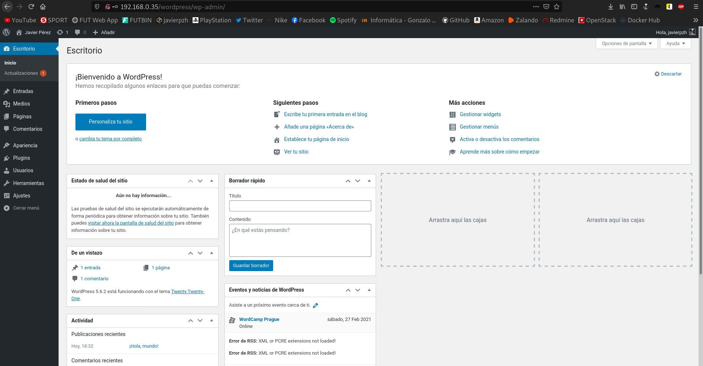

En este artículo vamos a ver como podemos aumentar el rendimiento de nuestro servidor web con Varnish.
Para ello, antes, vamos a comparar el rendimiento de distintas configuraciones de servidores web sirviendo páginas dinámicas programadas con PHP, en concreto, vamos a servir un CMS Wordpress.
Las configuraciones que vamos a realizar son las siguientes:
- Módulo Apache2-PHP5
- Apache2 + PHP-FPM (socket unix)
- Apache2 + PHP-FPM (socket TCP)
- Nginx + PHP-FPM (socket unix)
- Nginx + PHP-FPM (socket TCP)
Para cada una de las configuraciones he hecho una prueba de rendimiento con el comando ab, por ejemplo, durante 10 segundos, he hecho 200 peticiones concurrentes.
ab -t 10 -c 200 -k http://172.22.x.x/wordpress/index.php
Después de hacer muchas pruebas de rendimiento con un número variable de peticiones concurrentes (1, 10, 25, 50, 75, 100, 250, 500, 1000) y distintas direcciones del Wordpress, los resultados obtenidos son los siguientes:

NOTA: No es importante el número concreto de peticiones/segundo. Puede variar por muchas razones, como pueden ser:
- Desde donde haga las pruebas (no es lo mismo hacerlas desde localhost, o desde una máquina en la misma red, o desde internet).
- El estado del servidor, que recursos tenga libre,...
Lo importante es calcular una media intentando hacer las pruebas en un escenario lo más similar posible (por eso después de realizar cada prueba es recomendable reiniciar los servicios).
Podemos determinar que la opción que nos ofrece más rendimiento es Nginx + PHP-FPM (socket unix), cuyo resultado es aproximadamente unas 600 peticiones/segundo (parámetro Requests per second de ab).
A partir de esa configuración vamos a intentar aumentar el rendimiento de nuestro servidor.
Para ello vamos a llevar a cabo los siguientes apartados:
1. Vamos a configurar una máquina con la configuración ganadora: Nginx + PHP-FPM (socket unix). Para ello ejecuta la receta Ansible que encontraras en este repositorio. Accede al Wordpress y termina la configuración del sitio.
Comenzaremos clonando el repositorio en nuestro sistema:
javier@debian:~/Ansible$ git clone https://github.com/josedom24/ansible_nginx_fpm_php.git Clonando en 'ansible_nginx_fpm_php'... remote: Enumerating objects: 40, done. remote: Counting objects: 100% (40/40), done. remote: Compressing objects: 100% (27/27), done. remote: Total 40 (delta 0), reused 36 (delta 0), pack-reused 0 Desempaquetando objetos: 100% (40/40), listo. javier@debian:~/Ansible$ cd ansible_nginx_fpm_php/ javier@debian:~/Ansible/ansible_nginx_fpm_php$ ls ansible.cfg group_vars hosts LICENSE README.md roles site.retry site.yaml
En mi caso, he tenido que modificar el fichero ansible.cfg ya que voy a utilizar como equipo auxiliar una máquina construida en Vagrant y dichas máquinas no se crean con un usuario llamado debian, sino vagrant. Además de esta modificación, he editado el fichero hosts y en él he indicado la dirección IP correcta, es decir, la IP de dicha máquina Vagrant. Realizados estos cambios, vamos a ejecutar la receta de Ansible:
javier@debian:~/Ansible/ansible_nginx_fpm_php$ ansible-playbook site.yaml PLAY [servidores_web] ********************************************************************************** TASK [Gathering Facts] ********************************************************************************* ok: [nodo1] TASK [nginx : install nginx, php-fpm] ****************************************************************** changed: [nodo1] TASK [nginx : Copy info.php] *************************************************************************** changed: [nodo1] TASK [nginx : Copy virtualhost default] **************************************************************** changed: [nodo1] RUNNING HANDLER [nginx : restart nginx] **************************************************************** changed: [nodo1] PLAY [servidores_web] ********************************************************************************** TASK [Gathering Facts] ********************************************************************************* ok: [nodo1] TASK [mariadb : ensure mariadb is installed] *********************************************************** changed: [nodo1] TASK [mariadb : ensure mariadb binds to internal interface] ******************************************** changed: [nodo1] RUNNING HANDLER [mariadb : restart mariadb] ************************************************************ changed: [nodo1] PLAY [servidores_web] ********************************************************************************** TASK [Gathering Facts] ********************************************************************************* ok: [nodo1] TASK [wordpress : install unzip] *********************************************************************** changed: [nodo1] TASK [wordpress : download wordpress] ****************************************************************** changed: [nodo1] TASK [wordpress : unzip wordpress] ********************************************************************* changed: [nodo1] TASK [wordpress : create database wordpress] *********************************************************** changed: [nodo1] TASK [wordpress : create user mysql wordpress] ********************************************************* changed: [nodo1] => (item=localhost) TASK [wordpress : copy wp-config.php] ****************************************************************** changed: [nodo1] RUNNING HANDLER [wordpress : restart nginx] ************************************************************ changed: [nodo1] PLAY RECAP ********************************************************************************************* nodo1 : ok=17 changed=14 unreachable=0 failed=0
Terminado el proceso, automáticamente tendremos listo nuestro servidor web, en la dirección IP especificada. En mi caso es la 192.168.0.35, por lo que si me dirijo al navegador e introduzco dicha dirección me aparece la siguiente web:
Podemos ver como efectivamente se encuentra ejecutándose el servidor Nginx, pero, ¿se estará ejecutando el proceso adecuado para Wordpress? Para comprobarlo, vamos a añadir a nuestra dirección /wordpress:

Parece ser que también disponemos de nuestro Wordpress, así que vamos a terminar la instalación de esta nueva web y acceder a su panel de administración:

2. Vamos a hacer las pruebas de rendimiento desde la misma máquina. Para ello, vamos a ejecutar instrucciones similares a esta:
ab -t 10 -c 50 -k http://127.0.0.1/wordpress/index.php
Hay que decir, que el comando ab se encuentra en el paquete apache2-utils, por lo que debemos instalarlo:
apt install apache2-utils -y
Procedo a realizar las pruebas de rendimiento con valores distintos para comprobar el nivel de concurrencia, para ello, nos centraremos en los resultados de peticiones/segundo. Hay que decir, que entre cada prueba, he reiniciado tanto el servidor Nginx y el como el servidor PHP-FPM, para que los resultados sean los más reales posibles.
Veamos los resultados:
root@varnish:~# ab -t 10 -c 50 -k http://127.0.0.1/wordpress/index.php ... Requests per second: 163.73 [#/sec] (mean) root@varnish:~# ab -t 10 -c 100 -k http://127.0.0.1/wordpress/index.php ... Requests per second: 169.80 [#/sec] (mean) root@varnish:~# ab -t 10 -c 250 -k http://127.0.0.1/wordpress/index.php ... Requests per second: 13030.18 [#/sec] (mean) root@varnish:~# ab -t 10 -c 500 -k http://127.0.0.1/wordpress/index.php ... Requests per second: 16449.18 [#/sec] (mean)
3. Vistos los resultados, vamos a configurar un proxy inverso - caché Varnish escuchando en el puerto 80, que se comunicará con el servidor web por el puerto 8080. Posteriormente, volveremos a realizar varias pruebas de rendimiento.
Instalamos el software de Varnish mediante el siguiente comando:
apt install varnish -y
Una vez instalado, debemos tener en cuenta que, por defecto, Varnish escucha las peticiones en el puerto 6081, y en el 6082 para la interfaz de administración. En nuestro caso, queremos modificar este comportamiento de manera que Varnish escuche las peticiones en el puerto 80.
Para cambiar esto, en primer lugar, nos dirigiremos a nuestro virtualhost del servidor Nginx, y en él, cambiaremos el puerto predeterminado (80) por el 8080. El resultado final de este virtualhost sería el siguiente:
server {
listen 8080 default_server;
listen [::]:8080 default_server;
...
Obviamente, tras editar esto, debemos reiniciar nuestro servidor web para aplicar los nuevos cambios:
systemctl restart nginx.service
Hecho esto, aún nos quedaría la parte en que modificamos la configuración de Varnish para que escuche las peticiones en el puerto 80 y las redirija al 8080 que es donde tenemos nuestro servidor web.
En primer lugar, empezaremos por redirigir el tráfico al puerto 8080. Para hacer esto, nos dirigimos al fichero /etc/varnish/default.vcl y debemos asegurarnos de que el bloque backend_default se encuentra con este aspecto:
backend default {
.host = "127.0.0.1";
.port = "8080";
}
Bien, Varnish ya nos redirigirá el tráfico al puerto deseado, pero aún no está escuchando en el puerto 80, por lo que vamos a hacer que escuche en él. En el fichero /etc/default/varnish, tenemos que modificar el bloque DAEMON_OPTS y dejarlo como el siguiente:
DAEMON_OPTS="-a :80 \
-T localhost:6082 \
-f /etc/varnish/default.vcl \
-S /etc/varnish/secret \
-s malloc,256m"
En este punto, tan solo nos faltaría indicar en el demonio systemd que debe escuchar en el puerto 80. Este fichero se encuentra en la ruta /lib/systemd/system/varnish.service, y en él debemos modificar la siguiente línea hasta que posea este aspecto:
... ExecStart=/usr/sbin/varnishd -j unix,user=vcache -F -a :80 -T localhost:6082 -f /etc/varnish/default.vc$ ...
Ya hemos terminado todas las modificaciones necesarias, por lo que tan sólo nos faltaría reiniciar los servicios:
systemctl restart varnish systemctl daemon-reload
Por fin podemos realizar de nuevo las pruebas de funcionamiento y comparar los resultados con los anteriores. De nuevo, los servidores han sido reiniciados entre cada una de las pruebas:
root@varnish:~# ab -t 10 -c 50 -k http://127.0.0.1/wordpress/index.php ... Requests per second: 38760.20 [#/sec] (mean) ... root@varnish:~# ab -t 10 -c 100 -k http://127.0.0.1/wordpress/index.php ... Requests per second: 43572.91 [#/sec] (mean) ... root@varnish:~# ab -t 10 -c 250 -k http://127.0.0.1/wordpress/index.php ... Requests per second: 42457.51 [#/sec] (mean) ... root@varnish:~# ab -t 10 -c 500 -k http://127.0.0.1/wordpress/index.php ... Requests per second: 34078.54 [#/sec] (mean) ...
Podemos apreciar que los resultados son muy significativos y que la mejora de rendimiento es bastante abultada. Esto es debido a que nuestro proxy inverso - caché, a la hora de redirigir el trafico, lo hace tan sólo una vez, ya que para las próximas, ya lo tiene en caché, lo que hace que la respuesta sea mucho más rápida.
Para demostrar que el proxy Varnish tan sólo ha realizado una petición a nuestro servidor web, vamos a consultar los logs de acceso de Nginx:
root@varnish:~# tail -f /var/log/nginx/access.log 127.0.0.1 - - [26/Feb/2021:19:22:36 +0000] "GET /wordpress/index.php HTTP/1.1" 301 5 "-" "ApacheBench/2.3"
Como podemos apreciar tenemos una sola petición, lo que significa que habríamos terminado este pequeño ejercicio en el que se demuestra el aumento de rendimiento con Varnish, por lo que este post finalizaría aquí.